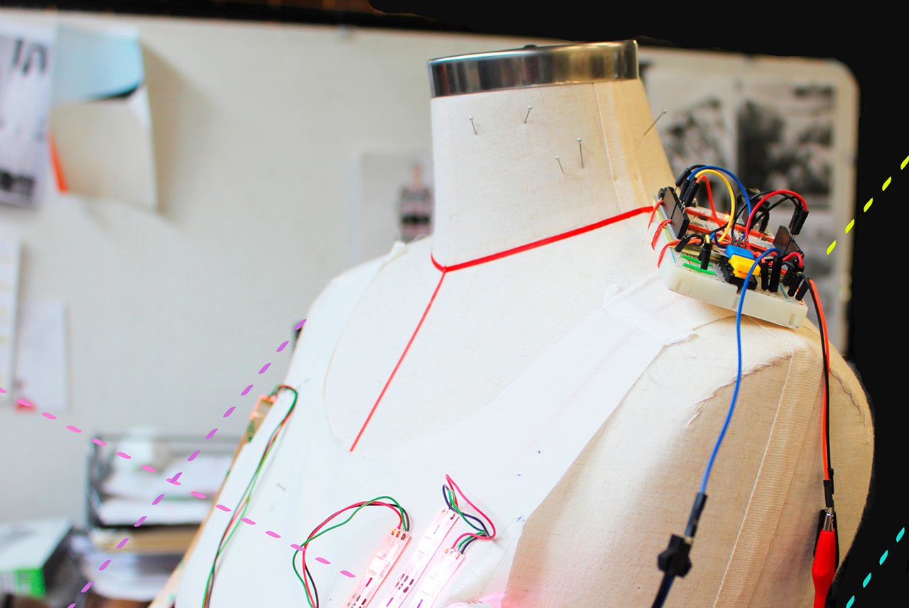

Paola Guimerans Sanchez
Este taller teórico-práctico sirve como iniciación a las nuevas posibilidades creativas que ofrece la electrónica do-it-yourself en el sector de la moda. El taller se dirige a personas interesadas en descubrir las posibilidades que ofrece el campo de los wearables y los textiles electrónicos. Este taller esta diseñado para experimentar con materiales inteligentes y confeccionar dos circuitos sobre tela. En el primer circuito se explican los principios de electricidad y electrónica básica, mientras que el segundo se realiza una introducción a LilyTiny Arduino para posteriormente poder diseñar un complemento de moda interactivo.
Paola Guimerans Sanchez es artista-educadora que investiga metodologías educativas STEAM. Defensora de la democratización tecnológica y del do it yourself, defiende la tecnología como material alternativo para la creación y la enseñanza de las artes. Cursó estudios en el MFA Design and Technology en el Parsons School of Design, Nueva York . En esta misma escuela ha impartido diferentes talleres de soft circuits y wearable technology , además de haber trabajado para el Fashion Technology Lab.
27-28 de junio, de 10.00 a 14.00 horas
Interés por la moda y la tecnología.
Cada participante recibirá un kit con todos los materiales por 12 euros, que se abonarán en el curso al recibirlo.
10 Horas
70€ (55€ para alumnos, exalumnos y profesores de artediez)